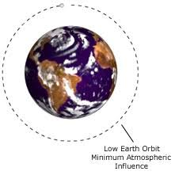
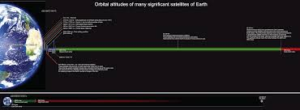
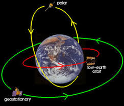
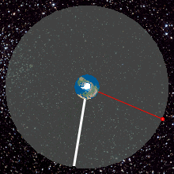

INTRODUCTION
CHARACTERIZATION
SIZE
->The orbital debris was recording 23000 objects in space measuring 10 cm in diameter.
->Scientist estimate that about 500000 bits of debris measuring 1cm to 2cm.
->And many millions are smaller than 1cm exist.
TYPES OF ORBITS
1.Low Earth Orbits(LEO)
->Situated at an altitude between 160km to 2000 km from
Earth’s surface.
->It has a time period of about 2hours 07 minutes.
->Objects below approx. 160 km will experience very rapid
orbital decay and altitude loss.
->It is the simplest and most cost effective orbit for a
satellite placement.
->Currently , NASA tracks more than 8,500 objects larger
than 10 cm in LEO.

2.High Earth Orbits
->Situated at above 36,000 km.
->Little used by satellites.
->Orbital periods of such orbits are greater than
24 hours.
->Hence , satellites have an apparent retrograde
motion.

3.Medium Earth Orbits
->Situated From 2000 km to 36,000 km above
Earth’s surface.
->The most common use for satellites in this
region is for navigation , communication
and space environment science.
->Has an orbital of 12 hours.

4.Geostationary Orbits(GEO)
->It is circular orbit at 35,786 km above
the Earth ‘s surface and following the
Earth’s rotation.
->An object in such an orbit has an
orbital period equal to the Earth’s
rotational period.
->This make them useful for
communication , as receiver on Earth
can always point in the same
direction.

HIGHER ALTITUDES
->In this air drag is less significant and also orbital decay takes longer.
->Although LEO are most commonly used than Higher Altitudes orbits and onset of the problem is slower.
->Solar winds and Solar radiation pressure can gradually bring debris down to down to lower altitudes (where it decays),but at higher altitudes this can take millenia.